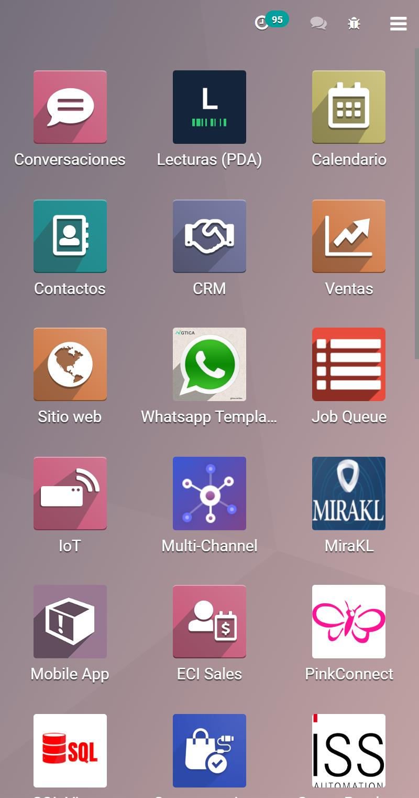
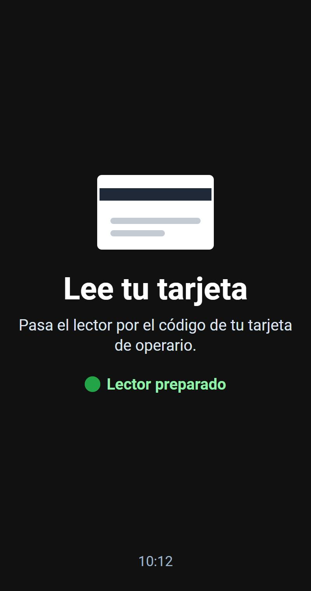
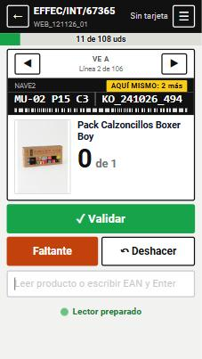

Lo justo para empezar, entender los avisos y salir de los problemas de siempre. Versión del 12/11/2026.

En la pantalla de inicio de Odoo, pulsa el icono negro Lecturas (PDA). Es el mismo para todos.
Si no lo ves, pulsa el menú (las tres rayas) y vuelve al inicio.

Cuando sale Lee tu tarjeta y el punto verde Lector preparado, pasa el lector por tu tarjeta de operario.
Lecturas te abre el siguiente pedido de tu cola. Si no tienes cola, lee el código del pedido (OUT o INT).
Al acabar el turno, pulsa Salir: la PDA queda libre para otro.

Zalando y About You: no llevan etiqueta CJ. Pulsa Caja y la caja se crea sola. Sale su número en grande (PACK0139…): apúntalo en la caja y pulsa «Seguir leyendo». Al Validar, lo que quede fuera de caja va solo a la última caja y también sale su número. Tocando «N cajas» arriba ves la lista de cajas del pedido.
Las líneas van en el mismo orden que la app de código de barras: L02, L03… y al final MU- y N1-.
Si te tienes que ir a mitad, pulsa Dejar aquí. Así otro puede seguirlo sin problemas.
Cambiar una prenda de caja: menú ☰ › Ver líneas › pulsa el ✎ de la línea, elige cuántas y a qué caja (o «Caja nueva»).
Color de la ubicación: menú ☰ › Color de la ubicación. Elige el que mejor veas; se guarda para ti.
Si en la PDA no sale el lineal y la columna, o se ve distinta a la de los compañeros, la app de Odoo tiene guardada una versión vieja. Hay que borrar la caché:
No pulses «Borrar almacenamiento» (o «Borrar datos»): cierra la sesión de Odoo y hay que volver a configurar la PDA.
Son líneas vacías que deja la app de código de barras cuando alguien abre el mismo pedido allí. Desde el 12/11 Lecturas ya no las enseña.